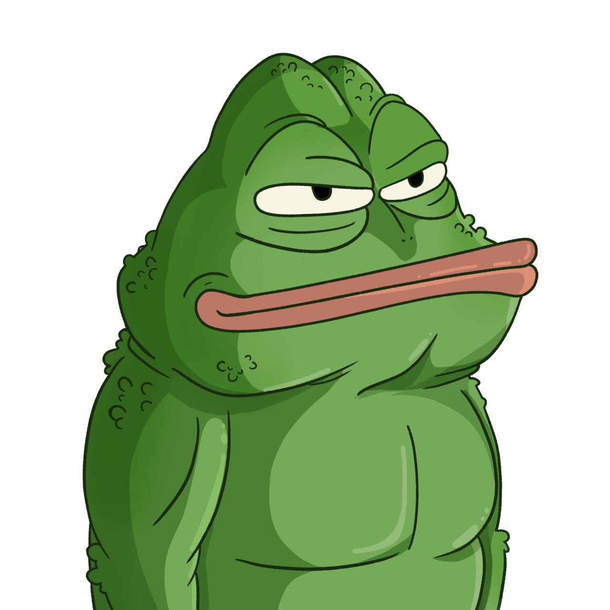
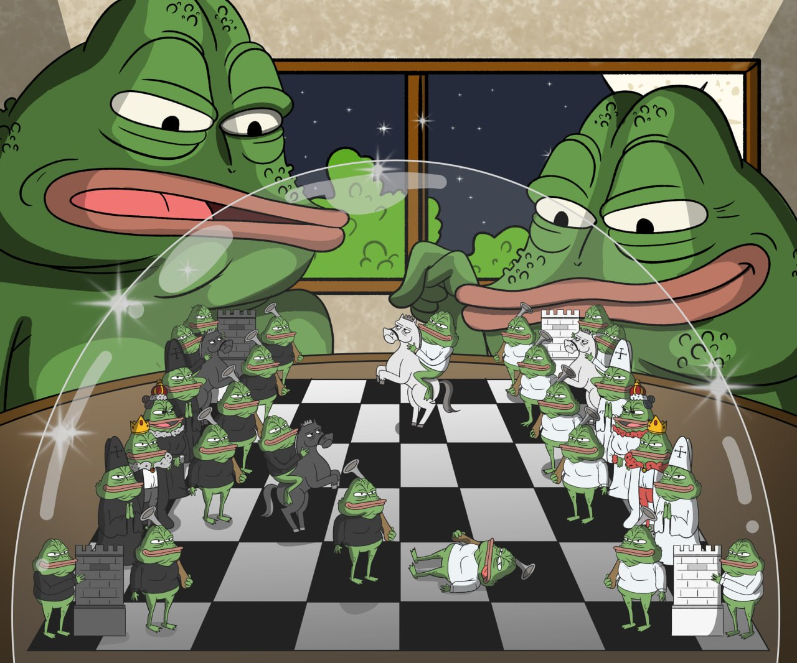
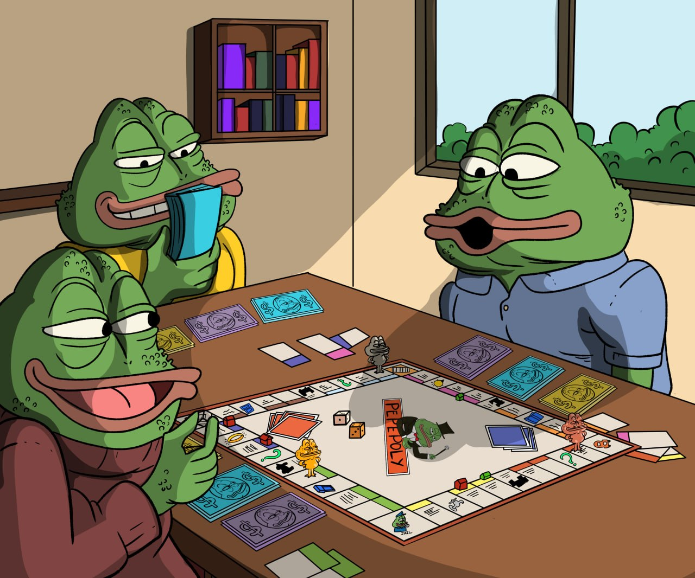
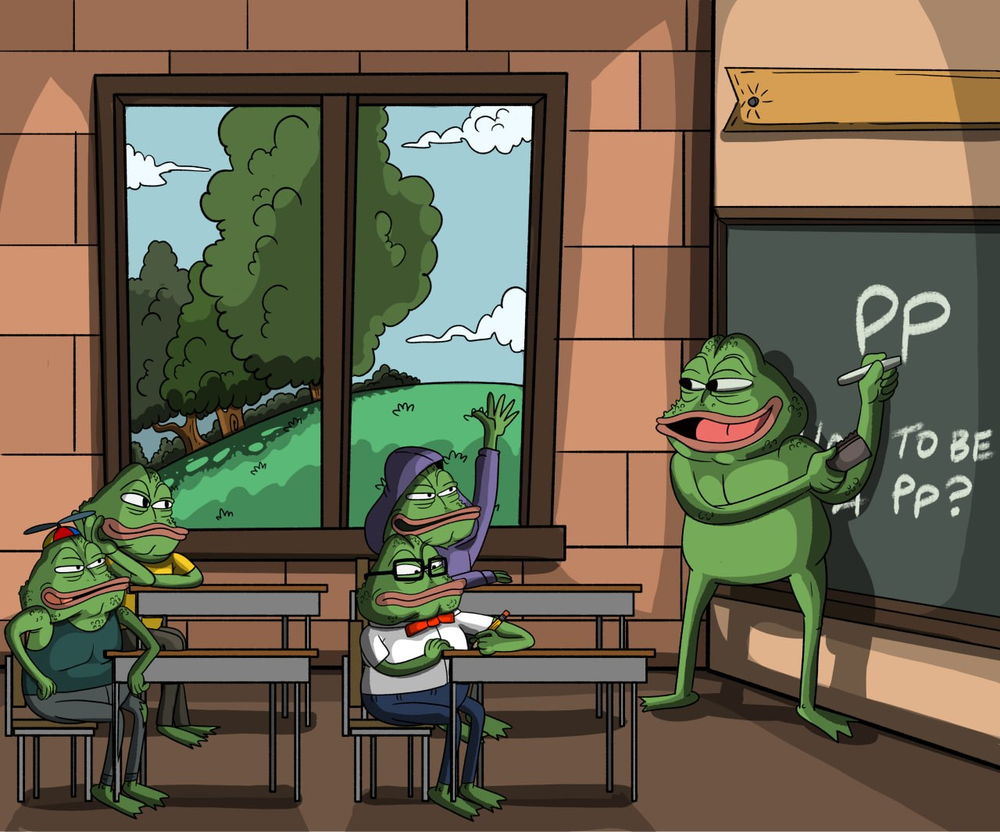
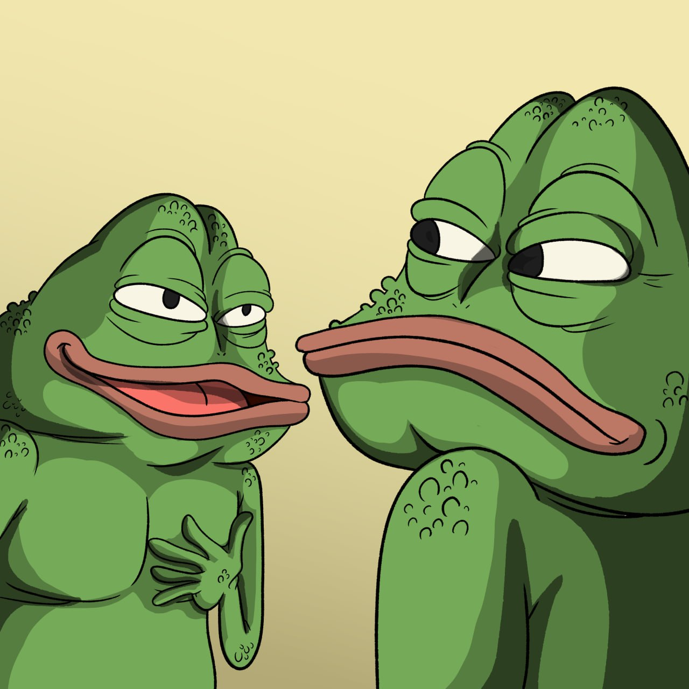
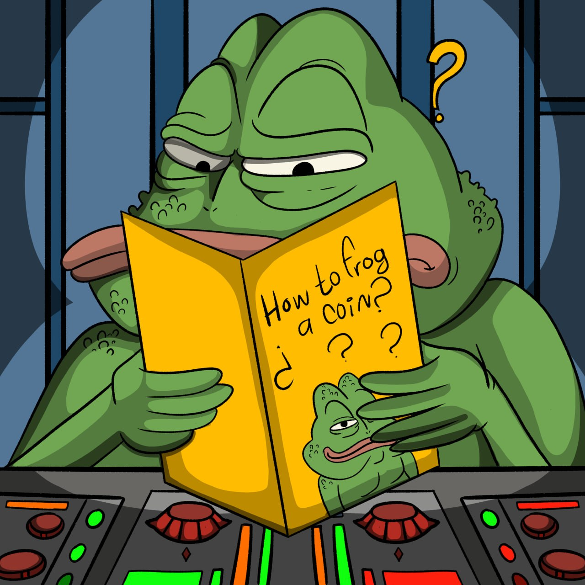

3,333 frog PFP mint
SushiFrogs NFT Collection
A ridiculous frog collection built around a new token distribution loop: mint the frog, hold it, burn feed, mine daily $SHIFROGS.
distribution experiment
Hold the frog. Mine the token.
$SHIFROGS starts with a 1B token supply, with SushiFrogs holding 79%. The NFT collection turns distribution into a daily ritual: every frog holder mines an ongoing amount of $SHIFROGS directly to their wallet.
The mint is not only a PFP drop. It is a strange little machine for turning attention, holding, and participation into token flow.
Character archive
Specimen Switcher
SPECIMEN 000

Artwork
World Scenes





official mint gate
Enter the Temple.
Every mint is a burn-to-mint: each egg of the SushiFrogs collection absorbs 20,000 $SHIFROGS and returns one unbroken frog. Contract is being verified — connect soon.
20,000 $SHIFROGS burn
3,333 supply
Official link
burn-to-mint gate
Mint your frog 3,333 supply · Robinhood Chain
The mint console goes live here once the contract is deployed and verified. Burn 20,000 $SHIFROGS per frog.
official project notes
SushiFrogs
A hand-drawn NFT collection, a points community reserve, and a daily $SHIFROGS distribution engine built around long-term participation.
the collection
Entirely hand-drawn, one piece at a time.
SushiFrogs is a collection of entirely hand-drawn NFTs created one piece at a time.
Every character, expression, and detail has been individually illustrated. No AI-generated artwork. No mass-produced filler. No shortcuts.
This collection represents the earliest chapter of the FROG community and the people who helped establish it.
mint details
Phased access before public mint.
- Collection size3,333 NFTs
- Burn20,000 $SHIFROGS burn
The mint will progress through multiple phases, giving the earliest and most active community members an opportunity to secure their position before the public phase.
1,000 NFTs reserved for the community
Reserved for the points community.
A total of 1,000 NFTs from the collection are reserved for the points community.
These NFTs will be purchased by the collection and distributed to eligible participants later in the mint.
Eligible NFTs will be dropped directly to qualifying wallets as the mint approaches its final phase.
There will be no separate mint required for these allocations. Eligibility will be determined using the recorded points and connected wallet information.
Waiting until the final phase allows the project to reward the people who remained involved, continued participating, and helped carry the collection throughout the mint.
This is designed to reward sustained conviction, not temporary attention.
minting and points
Frogs unlock mining. Points amplify it.
Minting a Frog and earning points are connected, but they serve different roles inside the ecosystem.
The Frog is the NFT itself. By holding it, you activate the mining ritual and begin receiving ongoing token distributions directly to your wallet.
Points act as an amplifier. They can increase your mining power and may also help determine eligibility for certain reserved rewards, including community allocations announced by the project.
Earning points will continue to be available over time, but the difficulty may change as the project evolves. Earlier participation may offer different opportunities than later participation, because the system is designed to reward those who position themselves early and stay involved.
The Frog gives you access to mining.
Points can make that mining stronger.
Together, they create a system where ownership, participation, and positioning all matter.
points and positioning
Points represent participation.
Points represent participation and positioning within the project.
The more actively someone contributes, the stronger their opportunity to establish themselves within the ecosystem.
Points may be earned through the officially announced activities and will be recorded through the project's points system.
what the NFT represents
It is your mining machine.
This NFT is more than a profile picture.
It represents participation in the earliest stage of the project, proof of involvement before the full story unfolded, and a permanent position within a community being built for the long term.
It is your mining machine.
Every frog becomes a participant in the ecosystem. As long as you hold your NFT, it continues generating daily $SHIFROGS distributions directly to your wallet.
The system begins with 1,000,000,000 $SHIFROGS, however, SushiFrogs is holding 79% of the total supply. Rather than releasing those tokens all at once, the collection transforms distribution into an ongoing ritual.
Hold the frog. Mine the token.
The mint is not simply the launch of 3,333 collectibles. It is the beginning of a long-term distribution engine where ownership, participation, and patience become part of the token's journey through the community.
The NFT represents your position in that system.
It is proof that you entered early, secured your place, and became part of the distribution mechanism from the beginning.
This is designed to reward people who stay, not people who arrive for a single moment of hype.
As the ecosystem evolves, the NFT will remain the core identity layer of the project, with future utilities, access, experiences, and integrations announced as they are developed.
One frog, one position.
important information
Verify everything before minting.
- Only use links published through the project's official channels.
- The team will never contact you privately asking for your seed phrase, private key, or wallet recovery information.
- Always verify the collection address before minting or purchasing on a secondary marketplace.
- Blockchain transactions are final. Mint responsibly and never spend more than you can afford to lose.
final note
Slow conviction creates foundations.
Fast hype can create attention.
Slow conviction creates foundations.
This collection is being built for the people who are here during the exciting moments, the quiet moments, and everything that comes between them.
The earliest positions are not always the loudest.
But they are usually the hardest to replace.